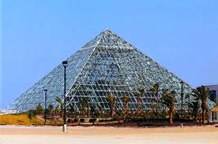
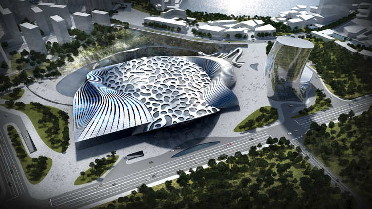

Futurist architecture is an early-20th century form of architecture born in Italy, characterized by strong chromaticism, long dynamic lines, suggesting speed, motion, urgency and lyricism: it was a part of Futurism, an artistic movement founded by the poet Filippo Tommaso Marinetti, who produced its first manifesto, the Manifesto of Futurism, in 1909. The movement attracted not only poets, musicians, and artists (such as Umberto Boccioni, Giacomo Balla, Fortunato Depero, and Enrico Prampolini) but also a number of architects. A cult of the Machine Age and even a glorification of war and violence were among the themes of the Futurists (several prominent futurists were killed after volunteering to fight in World War I). The latter group included the architect Antonio Sant'Elia, who, though building little, translated the futurist vision into an urban form.[1]
video
News
Architects Dreaming of a Future With No Buildings
FLORENCE, Italy — One recent afternoon, the architect Gian Piero Frassinelli, 81, stopped on a walk through a piazza near his home, and pointed at a fresco high above on a building’s facade.
The illustration depicts an entourage of local luminaries, including Dante, the poet, and the painters Leonardo da Vinci and Giotto. Many would view the scene as a tribute to Florence’s historic golden age. For Frassinelli, however, it represents the city’s disrespect for its creative sons.
“Until after their deaths, this city’s artists are destined to be rejected,” he said.
As the last surviving core member of Superstudio, Frassinelli should know. That radical architecture collective galvanized the design world during a MoMA exhibition in 1972, and its futuristic vision zigzagged the globe. Although Superstudio built very few actual buildings, its witty photo collages and designs, presented in exhibitions and glossy magazine spreads, opened up new possibilities for what architecture and urban planning could be.
Images
Aequorea, the floating city
Cobra Towers, Kuwait
Bio-Pyramid

Cloud Capture
Ecorium, South Korea
Dragonfly Skyscraper, New York
Dawang Mountain Resort, China

Nomad: Skyscrapers on Mars
Underwater Hotel
Cities in the Sky
Iformantion
Futurist architecture is an early-20th century form of architecture born in Italy, characterized by strong chromaticism, long dynamic lines, suggesting speed, motion, urgency and lyricism: it was a part of Futurism, an artistic movement founded by the poet Filippo Tommaso Marinetti, who produced its first manifesto
who produced its first manifesto, the Manifesto of Futurism, in 1909. The movement attracted not only poets, musicians, and artists (such as Umberto Boccioni, Giacomo Balla, Fortunato Depero, and Enrico Prampolini) but also a number of architects. A cult of the Machine Age and even a glorification of war and violence were among the themes of the Futurists (several prominent futurists were killed after volunteering to fight in World War I). The latter group included the architect Antonio Sant'Elia, who, though building little, translated the futurist vision into an urban form.[1]